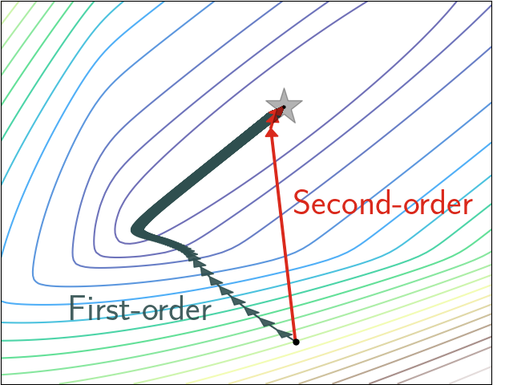
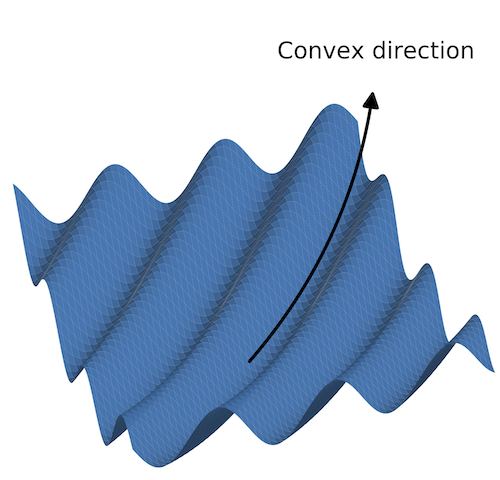
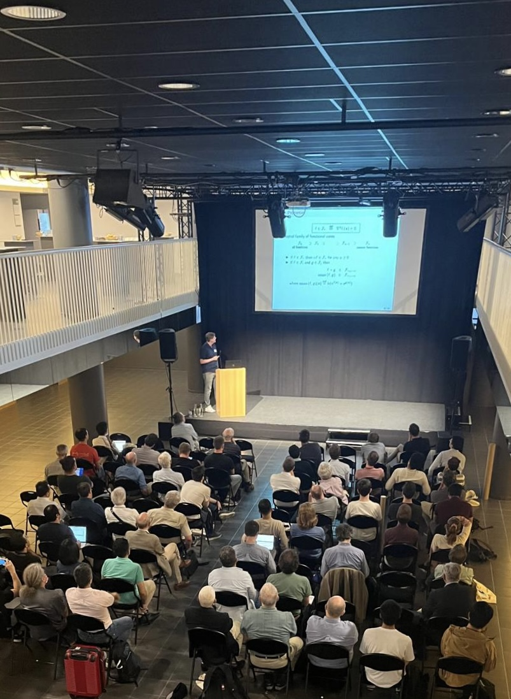
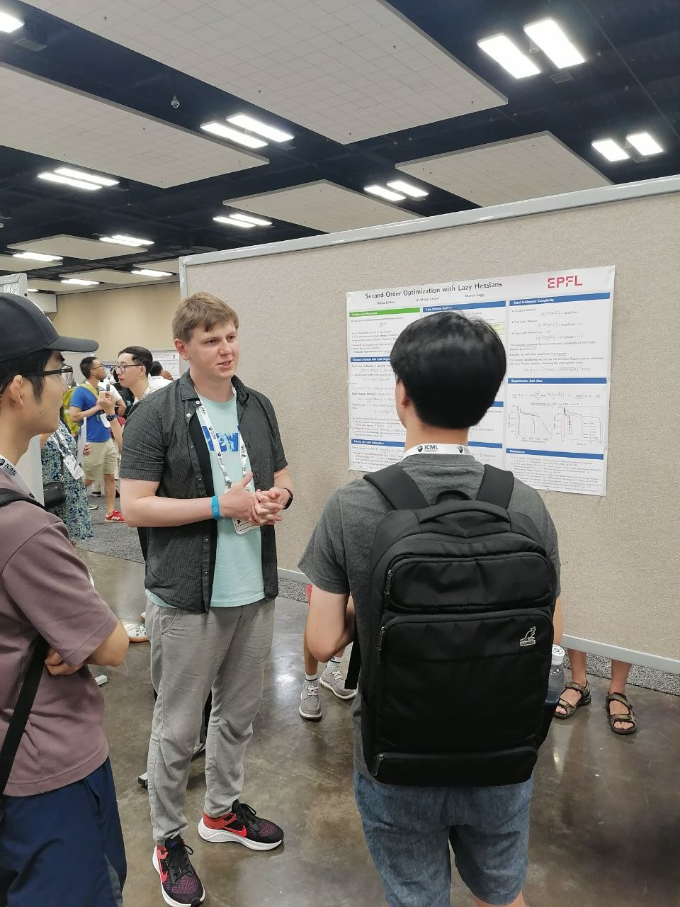
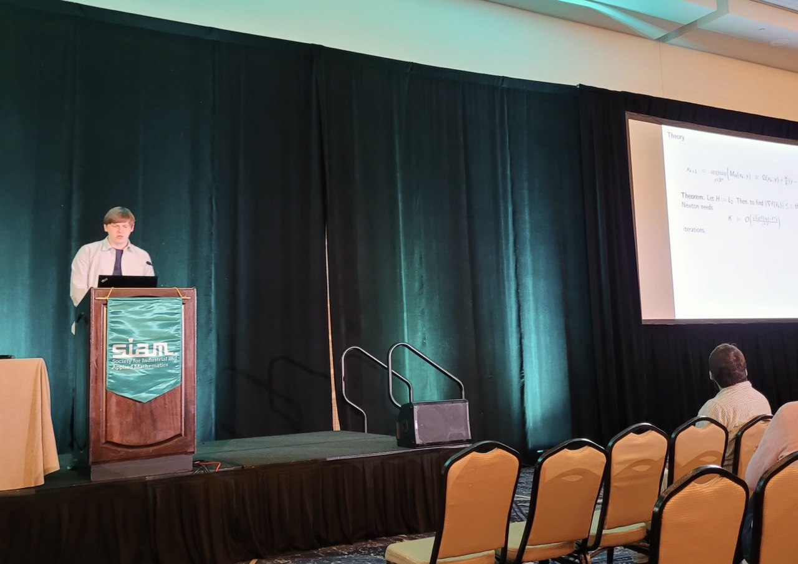

Welcome!
I do research in Computational Mathematics with a focus on Numerical Optimization and Machine Learning.Now I am a postdoctoral researcher at EPFL, Switzerland, working in the Machine Learning and Optimization Laboratory with Martin Jaggi.
|
I am excited to explore provably efficient optimization algorithms
that exploit the problem structure and combine ideas from various fields.
One of my areas of expertise is second-order methods and its global complexity bounds. I believe that bridging the gap between the second-order optimization theory
and the best known computational practices is what
will lead us to new achievements in the training process of our models.
|
 |
More broadly, I am interested in pursuing the following areas:
|
 |
I received a BSc degree in Computational Mathematics and Cybernetics from Lomonosov Moscow State University in 2015. I obtained a MSc degree from Higher School of Economics in 2017, where I was studying advanced statistical and machine learning methods.
Papers
Recent preprints / various:
-
Improving Stochastic Cubic Newton with Momentum.
El Mahdi Chayti, Nikita Doikov, and Martin Jaggi, 2024 (arXiv) -
Cubic regularized subspace Newton for non-convex optimization.
Jim Zhao, Aurelien Lucchi, and Nikita Doikov, 2024 (arXiv) -
Complexity of Minimizing Regularized Convex Quadratic Functions.
Daniel Berg Thomsen and Nikita Doikov, 2024 (arXiv) -
First and zeroth-order implementations of the regularized Newton method with lazy approximated Hessians.
Nikita Doikov and Geovani Nunes Grapiglia, 2023 (arXiv) -
Minimizing Quasi-Self-Concordant Functions by Gradient Regularization of Newton Method.
Nikita Doikov, 2023 (arXiv) -
Lower Complexity Bounds for Minimizing Regularized Functions.
Nikita Doikov, 2022 (arXiv)
Refereed publications:
2024
-
Spectral Preconditioning for Gradient Methods on Graded Non-convex Functions.
Nikita Doikov, Sebastian U. Stich, and Martin Jaggi, 2024 (International Conference on Machine Learning [ICML]: proceedings, arXiv) -
On Convergence of Incremental Gradient for Non-Convex Smooth Functions.
Anastasia Koloskova, Nikita Doikov, Sebastian U. Stich, and Martin Jaggi, 2023 (International Conference on Machine Learning [ICML]: proceedings, arXiv) -
Unified Convergence Theory of Stochastic and Variance-Reduced Cubic Newton Methods.
El Mahdi Chayti, Martin Jaggi, and Nikita Doikov, 2023 (Transactions on Machine Learning Research [TMLR], arXiv) -
Super-Universal Regularized Newton Method.
Nikita Doikov, Konstantin Mishchenko, and Yurii Nesterov, 2022 (SIAM Journal on Optimization [SIOPT]: open access, arXiv, code)
2023
-
Linearization Algorithms for Fully Composite Optimization.
Maria-Luiza Vladarean, Nikita Doikov, Martin Jaggi, and Nicolas Flammarion, 2023 (Conference on Learning Theory [COLT]: proceedings, arXiv) -
Polynomial Preconditioning for Gradient Methods.
Nikita Doikov and Anton Rodomanov, 2023 (International Conference on Machine Learning [ICML]: proceedings, arXiv) -
Second-order optimization with lazy Hessians.
Nikita Doikov, El Mahdi Chayti, and Martin Jaggi, 2022 (International Conference on Machine Learning [ICML] (oral presentation): proceedings, arXiv) -
Gradient Regularization of Newton Method with Bregman Distances.
Nikita Doikov and Yurii Nesterov, 2021 (Mathematical Programming Journal [Math.Prog]: open access, arXiv)
2022
-
High-Order Optimization Methods for Fully Composite Problems.
Nikita Doikov and Yurii Nesterov, 2021 (SIAM Journal on Optimization [SIOPT]: open access, arXiv) -
Affine-invariant contracting-point methods for Convex Optimization.
Nikita Doikov and Yurii Nesterov, 2020 (Mathematical Programming Journal [Math.Prog]: open access, arXiv, code)
2021
-
Local convergence of tensor methods.
Nikita Doikov and Yurii Nesterov, 2019 (Mathematical Programming Journal [Math.Prog]: open access, arXiv) -
Minimizing Uniformly Convex Functions by Cubic Regularization of Newton Method.
Nikita Doikov and Yurii Nesterov, 2019 (Journal of Optimization Theory and Applications [JOTA]: open access, arXiv)
2020
-
Convex optimization based on global lower second-order models.
Nikita Doikov and Yurii Nesterov, 2020 (Conference on Neural Information Processing Systems [NeurIPS] (oral presentation): proceedings, arXiv, code) -
Stochastic Subspace Cubic Newton Method.
Filip Hanzely, Nikita Doikov, Peter Richtárik, and Yurii Nesterov, 2020 (International Conference on Machine Learning [ICML]: proceedings, arXiv) -
Inexact Tensor Methods with Dynamic Accuracies.
Nikita Doikov and Yurii Nesterov, 2020 (International Conference on Machine Learning [ICML]: proceedings, arXiv, code) -
Contracting Proximal Methods for Smooth Convex Optimization.
Nikita Doikov and Yurii Nesterov, 2019 (SIAM Journal on Optimization [SIOPT]: open access, arXiv)
2018
-
Randomized Block Cubic Newton Method.
Nikita Doikov and Peter Richtárik, 2018 (International Conference on Machine Learning [ICML] (oral presentation): proceedings, arXiv)
Recent talks
- August 27, 2024: Spectral Preconditioning for Gradient Methods on Graded Non-convex Functions, ALGOPT, Louvain-la-Neuve (slides) [photo↓]
- July 1, 2024: Minimizing quasi-self-concordant functions by gradient regularization of Newton method, EURO, Copenhagen (slides)
- June 26, 2024: Spectral Preconditioning for Gradient Methods on Graded Non-convex Functions, EUROPT, Lund (slides)
- June 20, 2024: Polynomial Preconditioning for Gradient Methods, FGS-24, Gijón (slides)
- April 9, 2024: Minimizing quasi-self-concordant functions by gradient regularization of Newton method, NOPTA, University of Antwerp (slides)
- August 25, 2023: Super-Universal Regularized Newton Method, EUROPT, Budapest (slides)
- July 20, 2023: Second-Order Optimization with Lazy Hessians, ICML, Hawaii (slides, poster, video) [photo↓]
- July 19, 2023: Polynomial Preconditioning for Gradient Methods, ICML, Hawaii (poster)
- June 3, 2023: Second-Order Optimization with Lazy Hessians, SIAM Conference on Optimization, Seattle (slides) [photo↓]
- September 27, 2022: Super-Universal Regularized Newton Method, TML Laboratory, EPFL (slides)
- July 29, 2022: Affine-invariant contracting-point methods for Convex Optimization, EUROPT, Lisbon (slides)
- June 3, 2022: Second-order methods with global convergence in Convex Optimization, the research team of Panos Patrinos, KULeuven (slides)
- May 5, 2022: Optimization Methods for Fully Composite Problems, FGP-22, Porto (slides)
- February 21, 2022: Second-order methods with global convergence in Convex Optimization, MLO Laboratory, EPFL (slides)
- July 7, 2021: Local convergence of tensor methods, EUROPT, online (slides)
- March 4, 2021: Affine-invariant contracting-point methods for Convex Optimization, Symposium on Numerical Analysis and Optimization (invited by Geovani Nunes Grapiglia), UFPR, online (slides)
- October 28, 2020: Convex optimization based on global lower second-order models, NeurIPS, online (slides, poster)
- June 17, 2020: Inexact Tensor Methods with Dynamic Accuracies, ICML, online (slides, poster, video)
- October 8, 2019: Proximal Method with Contractions for Smooth Convex Optimization, ICTEAM seminar, Louvain-la-Neuve
- September 23, 2019: Proximal Method with Contractions for Smooth Convex Optimization,
Optimization and Learning for Data Science seminar
(invited by
Dmitry Grishchenko) Université Grenoble Alpes, Grenoble
(slides)
[photo↓]

- September 18, 2019: Complexity of Cubically Regularized Newton Method for Minimizing Uniformly Convex Functions, FGS-19, Nice (slides)
- August 5, 2019: Complexity of Cubically Regularized Newton Method for Minimizing Uniformly Convex Functions, ICCOPT, Berlin
- July 5, 2019: Randomized Block Cubic Newton Method,
Summer School on Optimization, Big Data and Applications, Veroli
[photo↓]

- June 28, 2019: Complexity of Cubically Regularized Newton Method for Minimizing Uniformly Convex Functions EUROPT, Glasgow
[photo↓]

- June 20, 2018: Randomized Block Cubic Newton Method, ICML, Stockholm
(slides,
poster,
video)
[photo↓]

- June 13, 2018: Randomized Block Cubic Newton Method,
X Traditional summer school on Optimization, Voronovo
[photo↓]